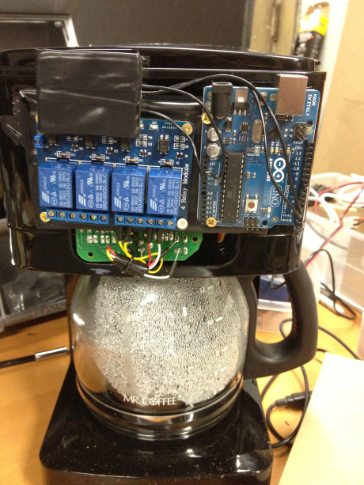

Add Your Coffee Maker to the Internet of Things
My interest in the Internet of Things began when I found my way to the Wikipedia article on HTCPCP (Hyper Text Coffee Pot Control Protocol). HTCPCP is a proposed standard for communicating with coffee pots over the Internet. During some free time this weekend, I built a prototype coffee maker that uses HTCPCP to allow my computer to control the coffee brewing process.

A couple years after building the first coffee maker, I adapted this project into the Arduino curriculum at techlab, and used the Arduino Ethernet shield to make it a completely web-based and RESTful solution - check out our github.
The Materials
- A cheap coffee maker ($20)
- An Arduino ($10 - $20)
- Arduino Ethernet shield (optional, $25)
- 4 channel relay module ($12)
Process
First, break open your coffee maker (at your own risk) and remove the chip behind the buttons. Then, solder wires to opposite diagonals of the button components on the chip. You can use a ruler to reference between the two sides of the board, as it is important to be soldering onto the correct point. The other end of the two wires gets connected to a relay module, which can switch an isolated electrical current and be powered by a small device like the Arduino.
I used a piece of scrap wood to mount the relay module onto the coffeemaker, then attached the Arduino and wired everything together.
The next step would be to take an Arduino Ethernet shield and attach it to the Arduino, which would allow you to communicate with it via Ethernet. Right now all of the code is on the github page, and I'll transfer the interesting parts over to here sometime soon.